Цвет имеет значение
Женя Жданова — дизайнер-декоратор из AD TOP 100. Её интерьеры — от купеческого дома 1887 года в Тарусе до дачи в Абрау-Дюрсо. Выберите цвет — откроется проект.
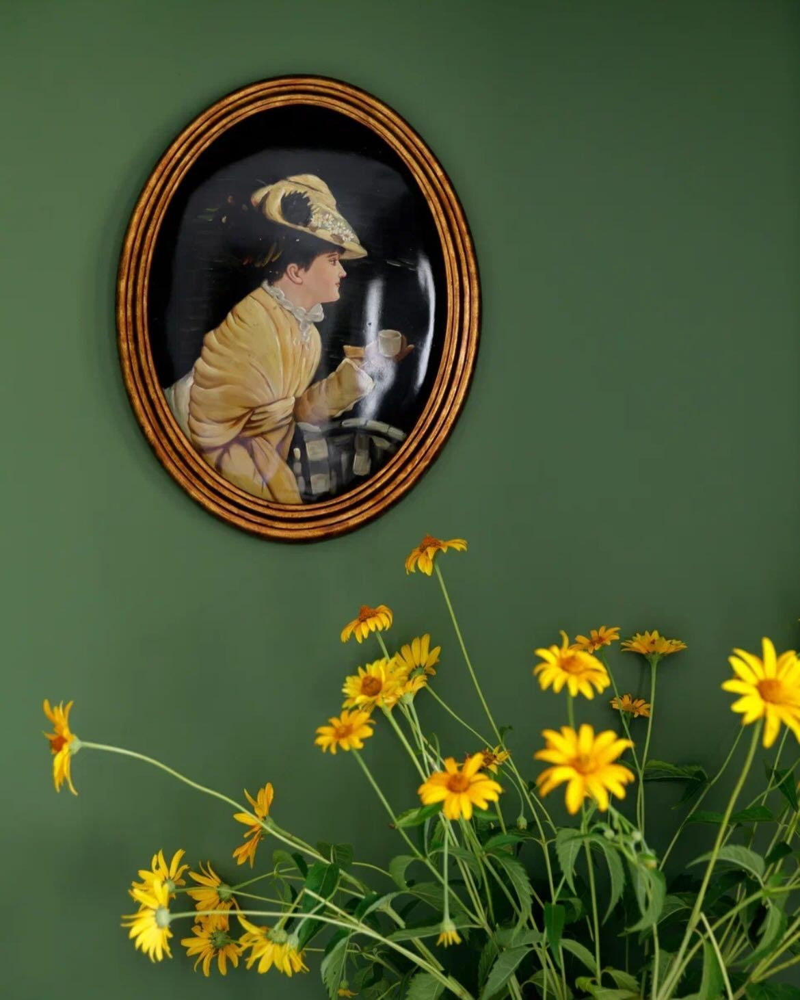
Бутик-отель · Таруса · 2025
Хоромы
Купеческий дом 1887 года — объект культурного наследия в ста метрах от набережной Оки. Из парадных номеров видно белый собор Петра и Павла. Десять номеров — десять тарусских дачников, их истории и философия.
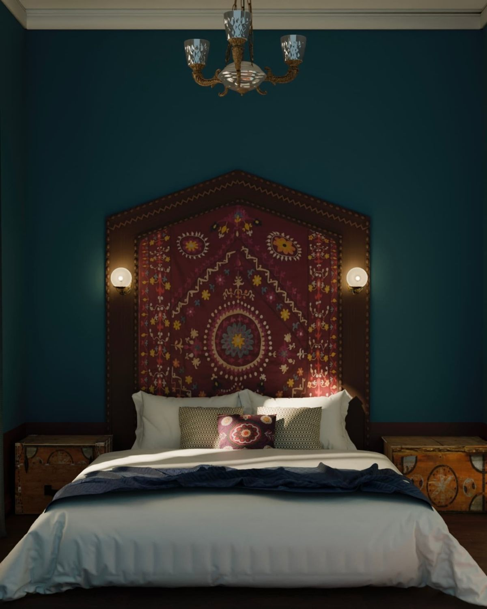
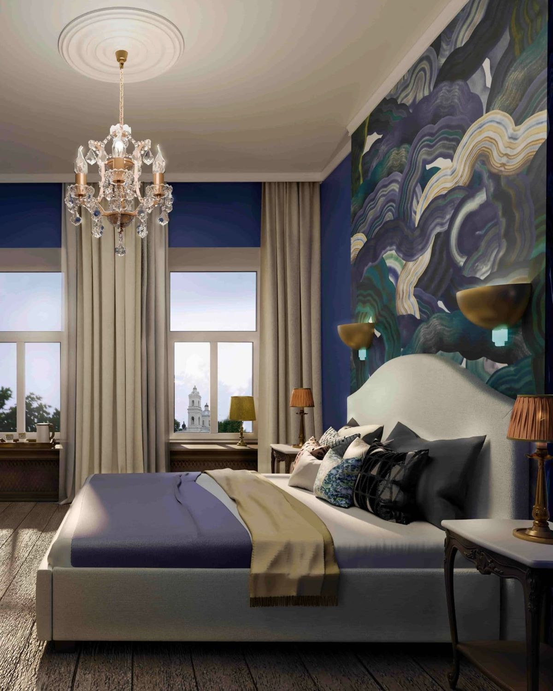
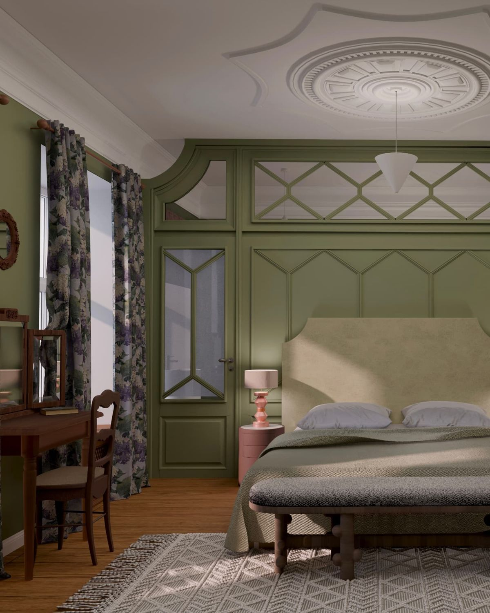
- Белла Ахмадулина
- Марина Цветаева
- Константин Паустовский
- Николай Заболоцкий
- Николай Ракицкий
- Святослав Рихтер
- Виктор Борисов-Мусатов
- Семья Ватагиных
- Семья Браговских
Marie Claire Maison: «бутик-отель с историей и модным дизайном». Номера делали известные дизайнеры и молодые авторы — выпускники курса Жени.
«…его душа желает быть воспета,
и непременно голосом моим»
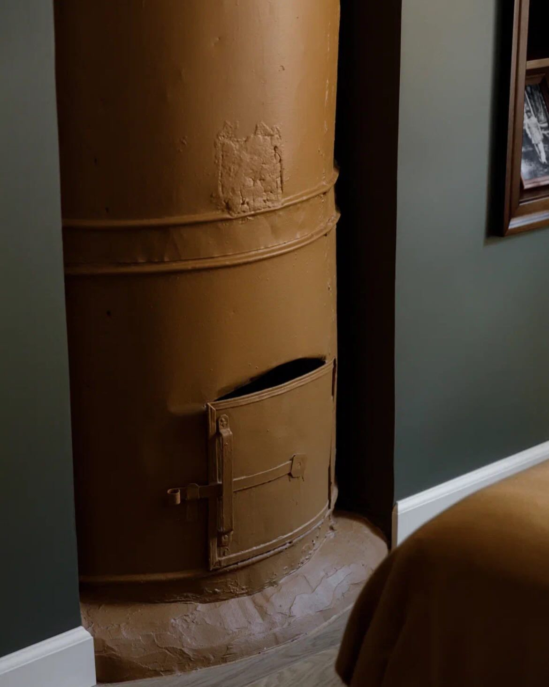
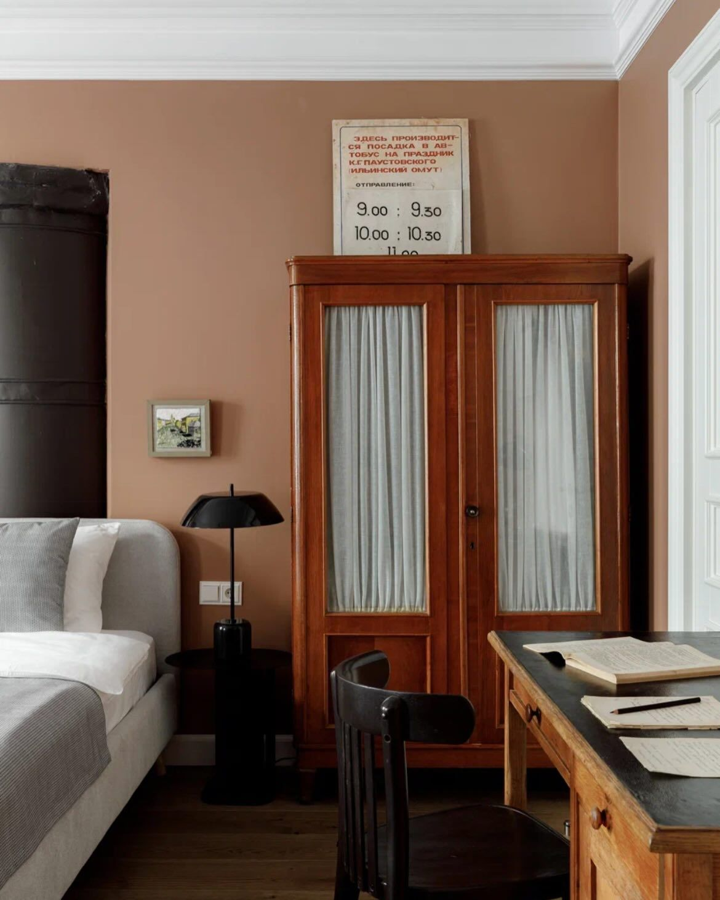
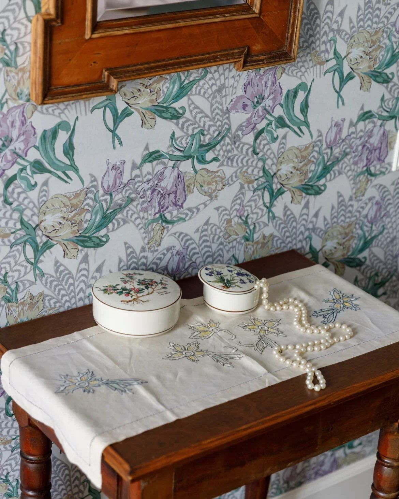
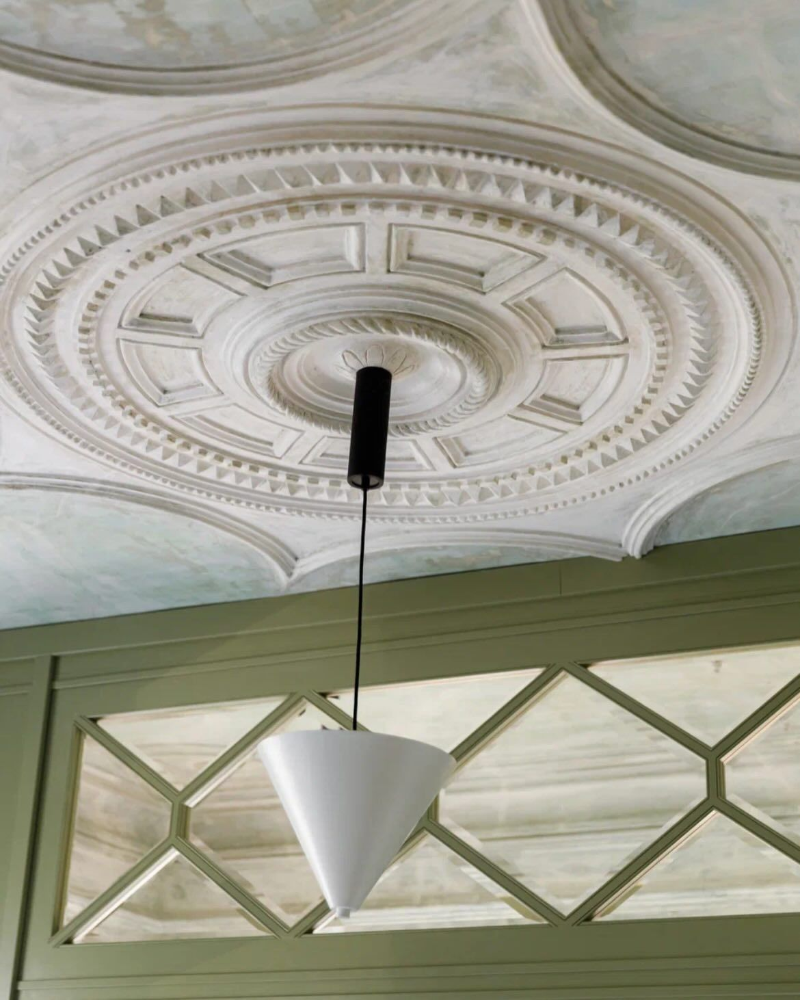
50+ предметов спасли несколько реставрационных мастерских: печи, комоды, столики, простеночные зеркала. Их искали на аукционах, в антикварных, получали в дар от друзей — и находили на любимом Авито.
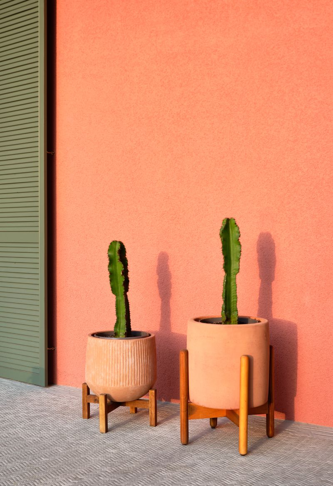
Дача для семьи с тремя детьми · Абрау-Дюрсо
«Марроканский» терракот
Заказчики объездили страну от Калининграда до Камчатки и выбрали Абрау-Дюрсо. Женя перепланировала участок: барбекю в саду, биоклиматическая пергола, бассейн цвета мальдивской лагуны, спа-зона. Фасад — плотный терракотовый, внутри — тёплый серый IN-706 Warm Grey 2 как фон для современных художников: Аси Феоктистовой, Михаила Тихонова, Евгения Чеса, Петра Петяева.
«Когда работаешь с большими пространствами, именно ковры помогают организовать зонирование и собрать интерьер».
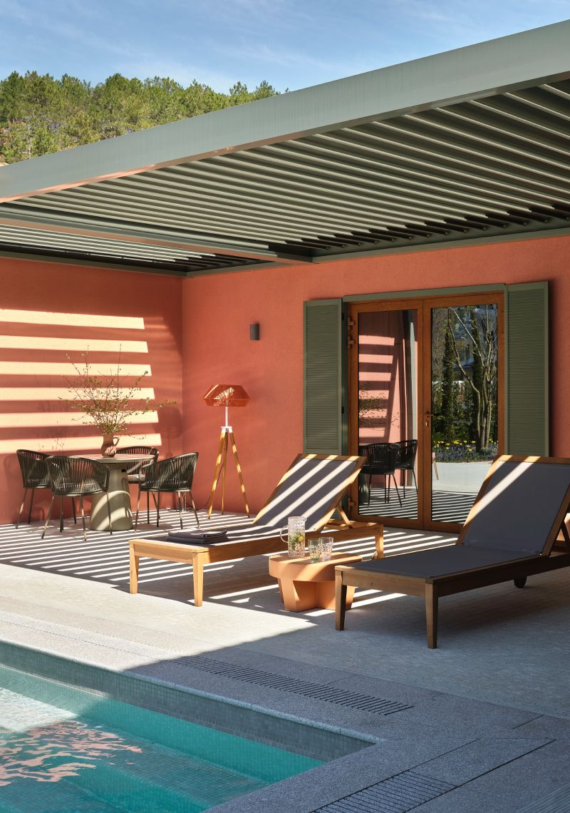
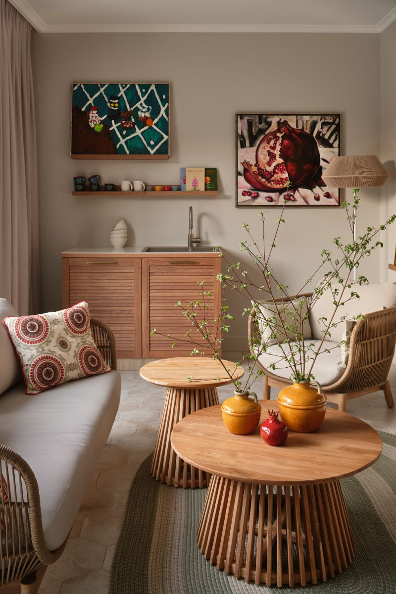
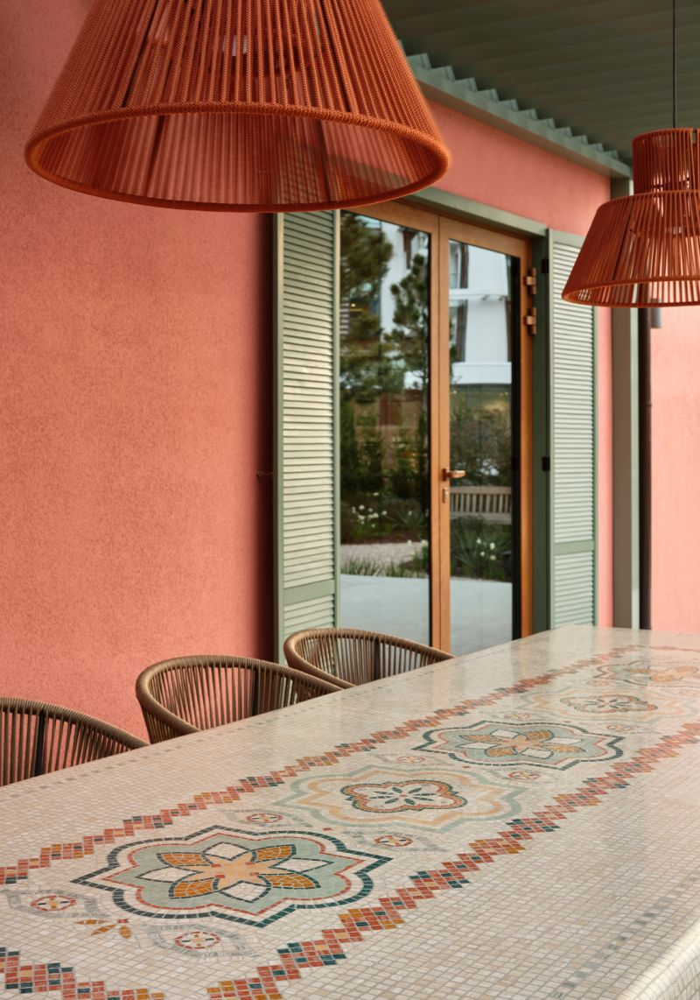
Авторский курс
INSPECTORIUM HISTORICAL
Практический курс о работе с историческими интерьерами — с погружением в культурный ландшафт Тарусы. Выпускники первого потока не просто сдали проекты — они сделали номера «Хором».
- «Играющий в темноте»номер о Святославе Рихтере — Елена Погорелова
- «Золотая роза»номер о Константине Паустовском — Екатерина Плахова
- «Тарусские мозаики»Оксана Шустова
- «Вечер на Оке»номер о Николае Заболоцком — Ольга Барабанова
Другие места
ТарусаСад РакицкогоБукеты из сада стоят в номерах «Хором» ПеределкиноДача ЛевенсонаНовое место для встреч и событий ЗабронироватьНомер в Хоромах@tarusasecretroomsНовый проект
Какого цвета будет ваш дом?
Загородный дом, квартира, исторический объект или отель — напишите Жене, с чем пришли.